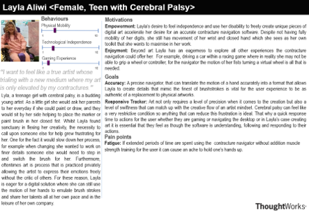
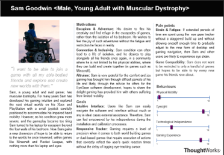
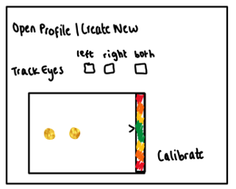
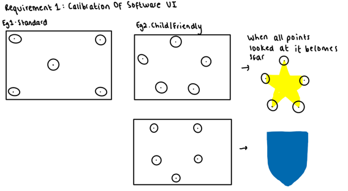
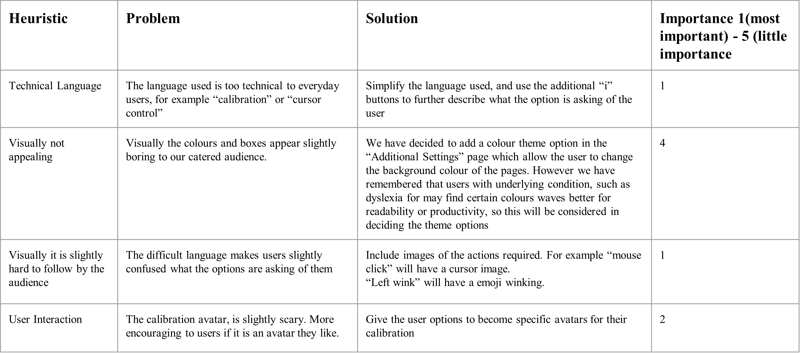

User Requirements
After attempting to acquaint ourselves with the existing Eye Gaze Software, we have interviewed our supervisor and a potential user who provided essential perspective and guidance. The images below highlight our interaction with a potential user, reflecting their requirements for the software.
From a potential Eye Gaze user
Do you have prior experience using Eye Gaze Software?
Yes, I have used it previously.
Were there any issues or challenges you faced while using the current version?
Yes, the calibration process was not engaging and I struggled in interpreting the heatmap data.
Would you prefer the calibration layout in a more user-friendly format like a symbol, say a superman shield?
That would certainly make the process more engaging and easier to interact with, especially for children.
How would you feel about a floating bubble feature on the screen that can expand and shrink?
I think it would be great, it can provide a dynamic interaction which can make the experience more enjoyable and effective.
The heatmap feature shows how far or close you are to the screen, would you prefer having an avatar that shows eye positioning instead?
An avatar could indeed be more representative and intuitive, especially for first-time users or children.
From a potential contracture accessibility tool user
How would you describe your experience with current contracture accessibility tools?
The current contracture accessibility tools have a bad and unintuitive user interface, which makes it challenging for me to navigate and use the software effectively.
What specific aspects of the user interface do you find problematic?
I find that the user interface lacks clarity and organization. The buttons and features seem to be randomly placed, making it difficult for me to locate and access the functionalities I need. Additionally, the color scheme and contrast choices make it hard for me to distinguish between different elements on the screen.
What improvements would you like to see in the interface of contracture accessibility tools?
I would like to see a more organized and streamlined user interface that presents the necessary features and functions in a logical and intuitive manner. Clear labeling, well-structured menus, and easily identifiable buttons would greatly improve my interaction with the software. Additionally, a visually appealing and accessible color scheme with proper contrast would enhance the overall usability of the tools
Personas
Below is our personas research


Scenarios
Layla Aliwi (Female, Teen with Cerebral Palsy)
Layla is a teenage girl, who was born with cerebral palsy, a condition that, among other effects, causes weakness in the muscles that often leads to clenche hands or finger contracted in unnatural positions. As a result of her condition her experience with a desktop or any tech interface has been limited, often touch based navigation using a pen of sorts or a joystick that are accompanied with assistance from someone like her parents to help adjust her grip on such items. For these reasons, combined with a desire for independence that many with disabilities seek out, Lyla could not hide her eagerness to trial software that would allow her to use simple her hand movement to digitally create her art pieces that she loved to share. After visiting out site, she and her parents were amazed that all she needed was to download a our program, with no additional hardware or specialty cameras needed, and undergo a short calibration process in order to sync the software so it best fit Layla’s capabilities. Her parents were also glad for the additional information pages available during the calibration that meant layla herself could understand how the programmed worked and why each step was necessary. After a few practices and some test digital painting in the deleted folder, Layla was able to gain a rhythm with the software and eventually create artworks she was proud to share. Moreover layla has found herself now using the tracker for navigation function beyond her art pieces, such as playing video game with her friends, using it to complete school work and other learning, and especially her general desktop maneuvers.
Sam Goodwin (Male, Young Adult with Muscular Dystrophy)
Sam, has been an avid gamer his whole life. When he was younger sam loved to play along with his siblings as much as he was able to whether it was controller based games or even when he was up for it having a go at games on the Wii. However as his muscular dystrophy developed more severely with time these games where becoming less playable for him. Then for many years Sam has developed his gaming intuition and explored the vast virtual worlds on his Xbox and PlayStation with a small joystick carefully positioned to accommodate his impaired hand mobility. Once again as his condition grew even more severe, and the gameplay became too tiring Sam turned to his laptop for escapism beyond the four walls of his bedroom. Now Sam has discovered that finally there is a chance for him once again immersed himself into the games he loves and return to the world's he once traversed, within games like Minecraft and Rocket League, with nothing more than his laptop and eyes.
Sketches
After receiving our requirements and trying to understand the personas of those using the software, we decided to drafts some sketches of what the software will look like.

The first illustration was to highlight the user profile page which is at the core of the user's experience with the software. This profile page is where users will be able to sift through option such as using one or both eyes or hands, as well as selecting a specific motion to invoke a (double)click. Furthermore the profile page will guide the users to be situated in the best position to begin the calibration process.

Intitial Prototype
Below is the first drafts of the prototype we designed using Figma.

Below are the initial load up screens, showing the change of screen when a button like “Both eyes” is clicked.

Below shows the window that would appear in order to ensure the user is sitting at the correct distance from the screen

Heuritistic Evaluation

Revised Prototype
After receiving our feedback we decided to implement the changes.
We allowed the user to choose a colour theme in the additional settings page. Additionally, added images and simplified the language, allowing the pages to be understood more easily.